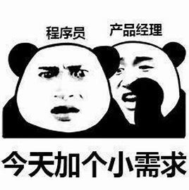

大家好，欢迎来到我的个人主页。 我是李欢麒，是一名学生。我的生活主要围绕着两个重要部分：程序设计和羽毛球。 在程序设计领域，我有着浓厚的兴趣和积极的探索态度。编程对我来说是一个将思维转化为实际应用的过程。我会认真对待编程中的各种问题，无论是算法难题还是软件设计要求，都努力通过严谨的逻辑分析和持续的实践来解决和完善。通过参与编程项目，我逐步积累了相关经验，提升了自己的能力。 羽毛球在我的课余生活中占据重要地位。这项运动我十分喜爱，在球场上，我注重每一个动作的规范和技巧的运用。打球过程中，我体会到了团队协作的重要性，也理解了竞争所带来的挑战和机遇。它帮助我保持身体健康和心理的坚韧，让我学会在不同的情境下保持稳定的心态。 这就是我的基本情况，希望能通过这个主页让你对我有更清晰的了解。
关于我
大家好，我是一名充满热情的学生，对程序设计和羽毛球有着浓厚的兴趣。在程序设计的世界里，我享受着创造和解决问题的乐趣；在羽毛球场上，我挥洒汗水，释放活力。(此乃谎言)

程序设计
我热爱编写代码，从简单的算法到复杂的应用程序，我不断探索编程的奥秘。
羽毛球
羽毛球是我生活中不可或缺的一部分，它让我保持健康和活力。
获奖经历
- 信息奥赛省二
薛定谔态的acm国一- “野坤杯”羽毛球一等奖